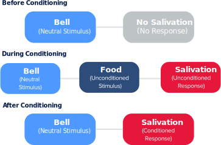
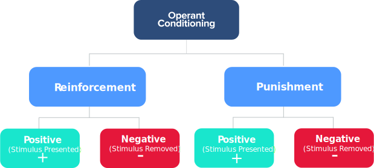
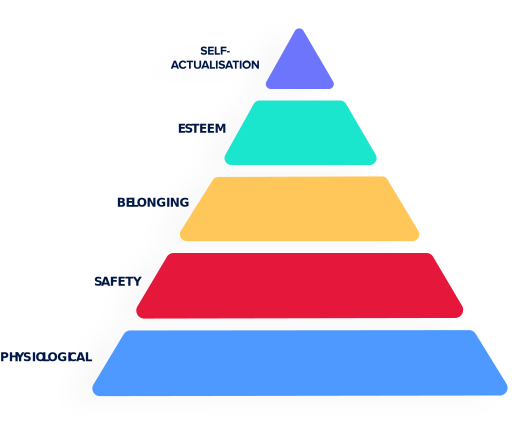

Psychology is the methodical study which examines behaviour and mental processes. There are many aspects to psychology, but in recent times, the broad definition of psychology has been narrowed down to five approaches which are biological, psychodynamic, humanistic, behavioural and cognitive. However there are only two specific psychological elements that I believe are the main forms of psychology used in various digital marketing strategies, these are Behavioural Psychology and Cognitive Psychology.
During the early 1990s, there was an ongoing contrast between behavioural and cognitive psychology theories. Behavioural psychology, also known as behaviourism, refers to the study of the connection between human behaviour and the human mind. John B. Watson, a pioneering psychologist played a very important role in the development of behaviourism. In 1913, Watson published an article entitled 'Psychology as the behaviourist views it,’ which began to outline various ideas regarding how behavioural analysis suggested that Classical Conditioning enabled him to explain the different aspects within human psychology.
Classical Conditioning (also known as Pavlovian conditioning) was discovered in around the 1890s, by a Russian Physiologist, Ivan Pavlov. It involves learning new responses through the process of association. This is when two functional reactions (stimuli) link together to form a newly learned response. This form of psychology focuses on the forced, automatic reactions produced by humans or animals. Like many great scientific discoveries, classical conditioning was discovered by sheer chance. This was due to the fact he noticed that dogs demonstrated the act of Classical Conditioning, therefore he began to run experiments on dogs to demonstrate his findings. These experiments were known as “Psychic Reflexes.”
Firstly, Pavlov presented a dog with food (Unconditioned stimulus) and rang a bell (neutral stimulus). The dog then began to salivate (unconditioned response). The dog would then associate the two stimuli together. Pavlov rang the bell for a second time without presenting the dog with food. However, when he did this, the dog began to salivate at the sound of the bell. This is called a conditioned response as the dog associated the bell with food. This experiment served as one of the vital breakthroughs within behaviourism as it explains how people and animals can respond to specific things in a conditioned way. However, this form of psychological conditioning was then overshadowed when the discovery of operant conditioning came about.
Psychologists and behaviourists were eager to propose a new form of conditioned psychology after the retirement of John Watson. An American psychologist Burrhus Skinner conducted new research and experiments to explain certain aspects of human psychology through his significant discovery of Operant Conditioning. This form of behaviourism is based on the idea that learning is an action of change in behaviour. Changes in behaviour are the result of an individual's response to occurrences (stimuli) that happen based on an individuals association between a particular behaviour and a consequence. Skinner began to conduct the experimentation with rats inside a specially made box, known as ‘Skinner Box’. This experiment seems very similar to Pavlov’s ‘Psychic Reflexes,’ experiment, however, both these theories differ greatly.
In the first step of Skinner's experiment, he placed a rat inside the skinner box. The rat at first didn't move when it first entered the box, but after a while, the rat began to adapt and started to explore its new surroundings. After exploring around the box, the rat discovered a lever. Upon pressing the lever, food was released. Once the rat had consumed the food, it began to explore the box again. So once the rat grew hungry again, he pressed the lever for a second time to receive food. This continued for a third, fourth and fifth time, until every time the hungry rat was placed inside the box he knew to immediately press the lever to receive food. Therefore this confirmed that the experiment worked as the rat learned exactly how to satisfy its hunger.
The revolutionary of behavioural psychology began to change around the mid-1990s, when cognitive psychology came to the surface and began to uncover pitfalls within behaviourists theories, gifting more popularity to the research of Cognitive Psychology. Cognitive is the condition of psychology which focuses on the way humans process information. It is a relatively new form of psychology which studies humans internal processes such as attention, language, memory, thinking and perception.
“Every psychological phenomenon is a cognitive phenomenon.”- Ulric Neisser
Cognitive psychology was first discovered by Ulric Neisser, an advocate for the diverse thoughts and findings to cognitive research. This approach is mainly concerned with gaining a better understanding of how the human mind works, learning more about the way in which the brain processes thoughts and information. Neisser suggests that cognition involves ‘all processes by which the sensory input is reduced, recovered, stored, elaborated, transformed and used,’ It is clear how evident cognition is in our everyday lives. Human behaviour responds to a series of stimuli and is processed through the mind. Therefore cognitive psychologists attempt to acknowledge the thought process that goes into human behaviour and the different moods that we as humans experience, this can impact on the way we respond to circumstances.
Behavioural psychologist Burrhus Skinner disapproves with cognitive approaches such as “Mediation Processes” revolving a stimulus and a response. This is because these approaches can't be seen or examined physically and for that reason, he determines that they can't be measured accurately as a result of their unscientific nature. He believes that only an external stimulus-response behaviour can be scientifically measured.
In my opinion, both branches of psychology try to explain the reasoning behind human behaviour. However, Cognitive Psychology is a very relatable method in the way that it reflects everyday life. For example, if you want to have a conversation with someone because you like them, that would be considered a mental process. Once you go and approach that person to talk that is your behavioural response. Therefore Cognition helps us gain a better understanding of how these sorts of mental processes work and what influences they have on our health and mind.
Whereas, behavioural psychology only focuses on human behaviour that can be physically observed. It doesn't understand or recognise the inner processes of how the mind works and what creates or motivates those changes in human behaviour. Which is why, over time both theories were replaced by other approaches providing a new combined cognitive-behavioural therapy, which takes the best from both methods within behaviourism and cognitive psychology.
Motives are an impulse which makes people act in a certain way as it’s an inner process that pushes an individual towards their goals. Motivation itself cant be physically observed, it can only be measured by a person’s behaviour.
Psychologists have conducted theories which explain the research of human motivation. The most well-known motivational theory would be by American psychologist, Abraham Maslow. His theory portrayed the needs of individuals through his 'Theory of human motivation', also known as Maslow's Hierarchy of needs. His theory reinforces the fact that a consumer's decision-making process may be related to their needs and wants.
Maslow's theory is demonstrated using a pyramid which consists of his five vital human motives, with the most basic of needs starting at the bottom, our physiological needs. As you start to move up the pyramid you will see the human needs such as safety, belonging, esteem and then self-actualisation at the top. “ Give people affection and security, and they will give affection and be secure in their feelings and their behaviour.” This means that Individuals have specific needs that influence their behaviour, however satisfied needs don't act as motivators, only unsatisfied needs can influence our behaviour.
After conducting further research into motivation theories, I discovered another American psychologist David McClelland's who's theory consists of only three types of human motivational needs, the need for power, the need for achievement and the need for affliation.
He suggests that we all have these three types of motivation regardless of sex, age, culture, and race. Each type of motivation that each individual is driven by is changed by life experiences and the opinion of their culture. I believe that McClelland's theory fits perfectly into real-life situations, more so than Maslow’s theory of needs. This is due to the fact that nothing in life is set in stone, as life circumstances recurrently change every day, our human needs also change. This motivation theory is based around real life, therefore feels a lot more natural compared to Maslow's Hierarchy of needs. Maslow only believes in his hierarchy of needs, he never considered an individual's cultural factors, which account for peoples behavioural responses to change. I still believe that both theories play a huge part when it comes to explaining the process of human motivation and how an individuals behaviour may change when their needs aren't met, resulting in demotivation.